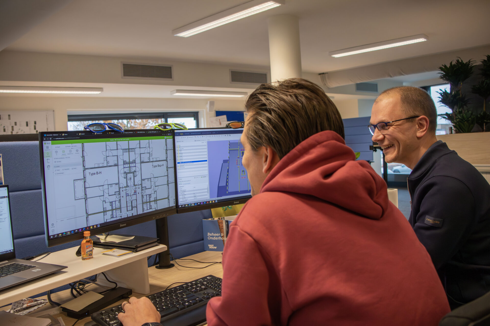
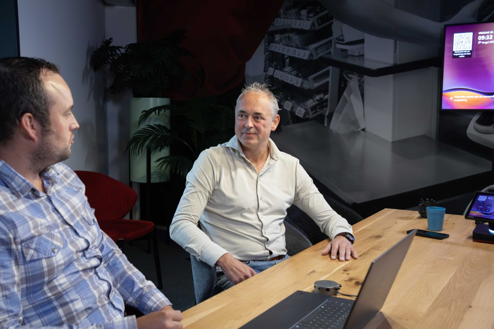

Van plan naar verandering in het dagelijks werk
Vaak begint het met een vraag over Revit of Solibri. Daarachter zit meestal een proces- of organisatievraag. Software kopen is het makkelijke deel. Dat mensen er over een jaar nog mee werken, dat processen kloppen en de keten meedoet, dat is het werk. Wij begeleiden implementatie en adoptie, met mensen die het zelf hebben gedaan.
Implementatie die blijft staan
Voor digital leads, BIM-managers en projectdirecteuren die weten wat er kan en de organisatie nodig hebben om het te laten werken.
Waarom toepassing stokt, ook als de techniek klopt
Wij kennen niet alleen de software. We weten waarom een goed protocol op de werkvloer toch niet gebruikt wordt. Meestal is het één van deze zes.
Vastbouw: digitaal werken op de bouwplaats, met de mensen die het doen
Dalux op elke tablet is geen resultaat. Dat uitvoerders er hun dag mee beginnen wel. Pilot op één project, uitvoerders als ambassadeurs, daarna uitrol.
Lees het verhaal →“De uitvoerders beginnen hun dag nu in Dalux. Dat was twee jaar geleden ondenkbaar.”
Human in the loop
Technologie invoeren in het tempo van de mensen die ermee werken, met controle en eigenaarschap op de werkvloer. Niet omdat het aardig is, maar omdat het anders niet blijft staan.

Onderdeel van één aanpak
Strategy, Transformation en Capability zijn los in te stappen. De meeste organisaties beginnen bij één vraag en merken dat de andere twee erbij horen.
Ik weet wat er kan. Nu heb ik de organisatie nodig.
Herkenbaar? Spar met Herwin. Hij was zelf werkvoorbereider en BIM-coördinator en kijkt in een half uur mee naar waar het vastloopt en wat een eerste, kleine stap kan zijn.
We reageren dezelfde werkdag. Liever eerst zelf kijken? Doe de zelfscan.